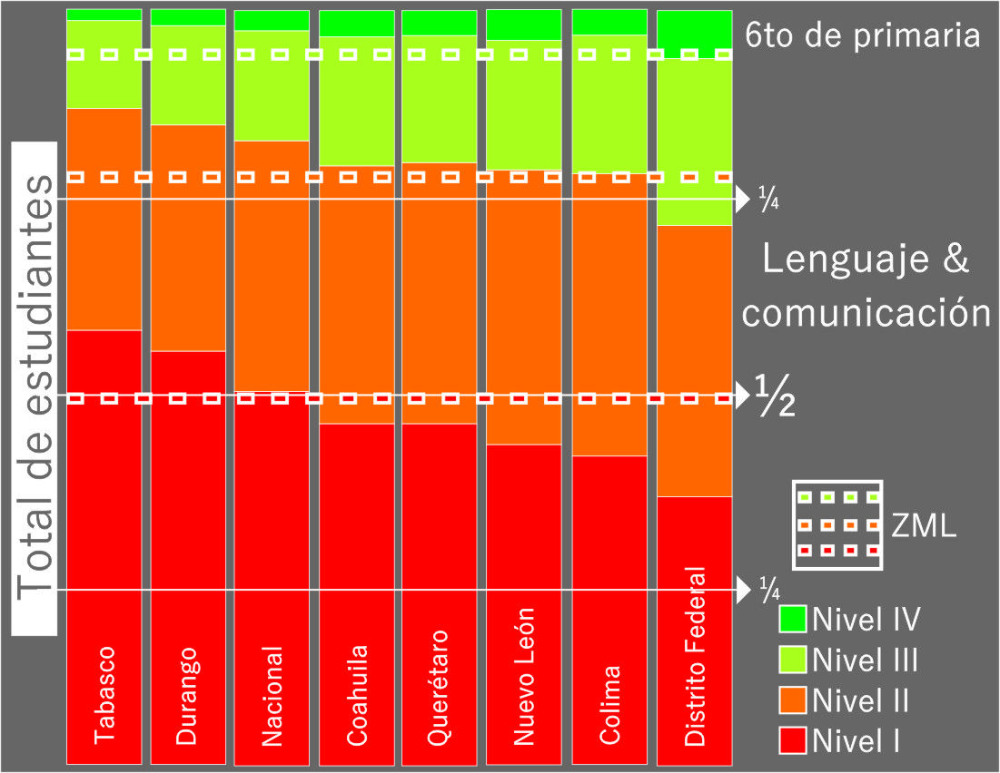
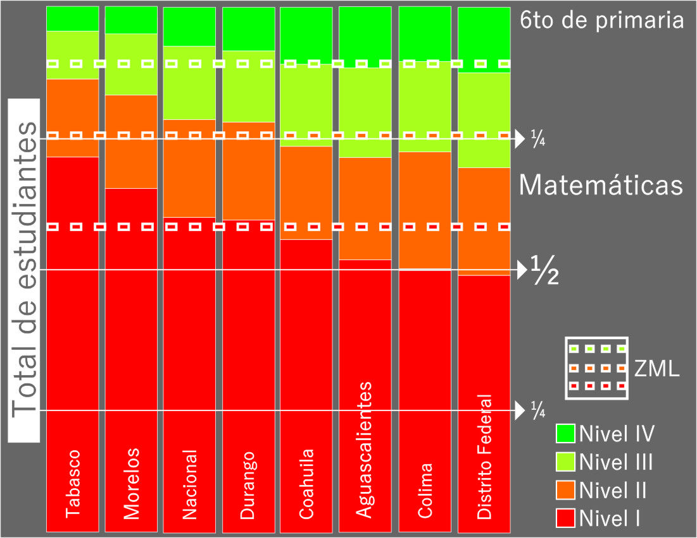
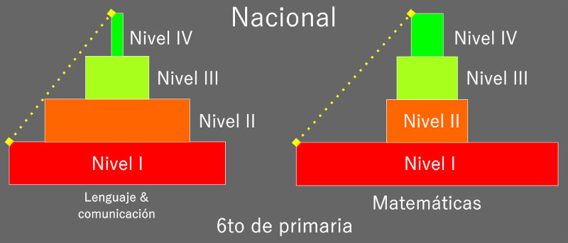
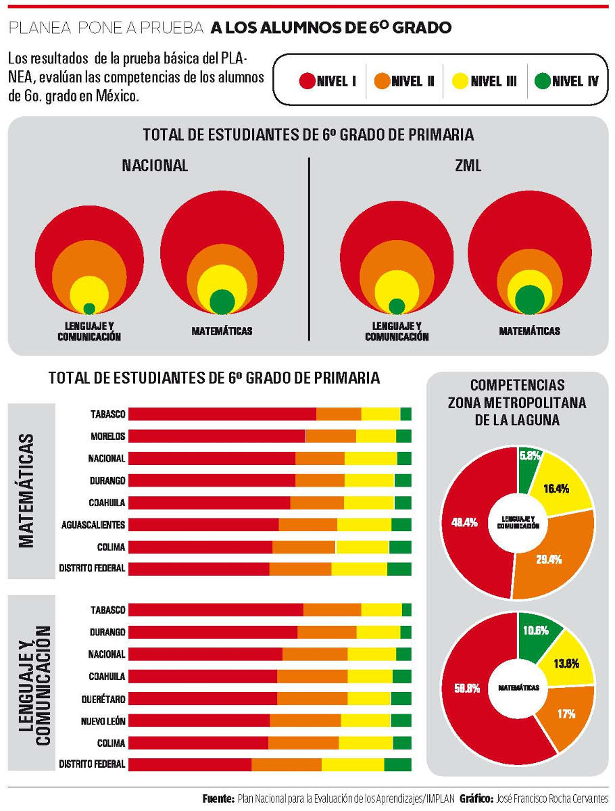

Este análisis estará conformado por tres entregas. En la primera se abordará la contextualización de la prueba PLANEA, cuestiones metodológicas y la forma de organizar la información, así como los resultados generales de primaria con la intención de ir adentrándonos en los números. En la segunda, se profundizará en las estadísticas de primaria y finalmente la tercera parte con un análisis de los datos de secundaria, que en conjunto con las entregas previas podríamos tener conclusiones sobre la educación básica en la Zona Metropolitana de la Laguna.
El Instituto Nacional para la Evaluación de la Educación, INEE en conjunto con la Secretaria de Educación Pública y las autoridades educativas de las entidades del país lanzan el Plan Nacional para la Evaluación de los Aprendizajes, PLANEA. Para este fin se diseña un nuevo instrumento conocido como la prueba “PLANEA Básica” para evaluar el estado que guarda la educación en México partiendo de los ejercicios que se llevan a cabo año tras año. Se aplicó a los alumnos de sexto de primaria y de tercero de secundaria por medio de una muestra representativa seleccionada aleatoriamente. La prueba fue aplicada durante el mes de Junio tanto para primaria como secundaria.
A la luz de los resultados arrojados por la primera prueba PLANEA, que a primera instancia nos proyecta a los ejercicios anteriores de la SEP como la prueba ENLACE, podemos observar tres puntos:
El primero, a pesar de la similitud entre PLANEA y ENLACE, el INEE precisa que no son series consecutivas, es decir, PLANEA comienza como la base de las evaluaciones post 2015 por lo que las estadísticas de ENLACE no debieran considerarse como serie histórica.
Segundo, al trabajar las bases de datos encontramos elementos que proporcionan información extra sobre la confiabilidad de los resultados y criterios de representatividad de cada escuela. En comparación con los ejercicios de años anteriores considero que se ha avanzado hacia un instrumento de evaluación más fiable.
Tercero, los resultados son evaluados como habilidades con las que cuentan las y los estudiantes al finalizar los estudios básicos a diferencia de ENLACE que organizaba los resultados en cuatro niveles: insuficiente, elemental, bueno y excelente. En PLANEA se ha intentado abordar los rangos de resultados cualitativamente, aunque podríamos encontrar elementos que permitan compararse con los ejercicios anteriores, el INEE recomienda no utilizarlo de esa forma.
La tabla 1.1 muestra los rangos en los que se agrupan los datos y su significado:
Tabla 1.1
| Campo de formación | Nivel I | Nivel II | Nivel III | Nivel IV |
|---|---|---|---|---|
| Lenguaje y comunicación | Seleccionan información sencilla que se encuentra explícitamente en textos descriptivos. | Comprenden la información contenida en textos expositivos y literarios. | Realizan inferencias, como interpretar el sentido de una metáfora en una fábula. | Comprenden textos argumentativos como artículos de opinión. |
| Matemáticas | Escriben y comparan números naturales. Sin embargo, no resuelven problemas aritméticos con números naturales. | Resuelven problemas aritméticos con números naturales. | Resuelven problemas aritméticos con números naturales o decimales. Resuelven problemas de aplicación de perímetros. | Resuelven problemas aditivos con números naturales, decimales y fraccionarios. Resuelven problemas de aplicación de áreas. Resuelven problemas que implican calcular promedios y medianas, y comparar razones. |
Resultados estatales de PLANEA Básica Lenguaje y comunicación.
A nivel nacional los resultados de la prueba arrojan los siguientes datos: el 49.5% de la población estudiantil se encuentra ubicada en el nivel I, es decir, un estudiante de cada dos que recién se gradúan de primaria. 33.2% en el nivel II, tres de cada diez se encuentra en el segundo nivel. El 14.6% en el nivel III, tres de cada veinte graduados. Tres de cada cien mexicanos en edad de terminar la primaria cuentan con habilidades avanzadas en lectura y comunicación: 2.6% en todo el país se agrupan en el nivel IV.
En las entidades federativas de las que se tienen resultados (Chiapas, Guerrero, Michoacán y Oaxaca aún no cuentan con datos) el Distrito Federal se ubica con los mejores resultados en la materia, seguido de Colima y Nuevo León. Los estados de Tabasco (28°), Guanajuato (27°) y Durango (26°) ocupan los lugares con menor puntaje. Coahuila se ubica en el séptimo sitio con números prácticamente idénticos a los de Querétaro.
En el gráfico 1.1 podemos dimensionar los datos de la ZML con el nacional y los estatales encontrando que la proporción de estudiantes que se encuentran en el nivel I es similar a la media nacional: 48.4%.
La proporción de estudiantes del Distrito Federal con un nivel avanzado (IV) se equiparan con los de la ZML, 6.3 de la capital comparado con el 5.8% de nuestra región. El 36% los ubicamos en el nivel I y otro 36% en el nivel II mostrando una distribución equitativa en DF, mientras que en la ZML no se refleja así: 48% en el nivel I y 29% en el nivel II. Existe un 39% de diferencia entre la distribución del alumnado para ambos niveles.
Gráfico 1.1

Resultados estatales de PLANEA Básica matemáticas.
En el país encontramos que el 60.5% de los estudiantes que presentaron la prueba se encuentran en el nivel I y el 18.9% en el nivel II, es decir, de cada cinco alumnos tres se ubican en el primer nivel y uno en el segundo. El 13.8% en el nivel III y 6.8% en el nivel IV lo que representa una quinta parte.
El Distrito Federal, seguido de Colima, nuevamente se posicionan como las entidades mejor posicionadas en cuanto a los resultados de matemáticas. Aguascalientes les sigue en el tercer escalón. Las entidades federativas con las cifras más bajas en la materia son Tabasco (28°), Morelos (27°) y Sonora (26°). Coahuila mejora a comparación de sus datos en lenguaje y comunicación (7°), ocupa el 6° en matemáticas. Mientras que Durango nos muestra un rendimiento más elevado en esta materia (18°) que en las habilidades de lectura (26°) con cifras similares a los datos nacionales.
La ZML agrupa a sus estudiantes de primaria de la sigueinte forma: 58.8% en el nivel I, 17% en el nivel II, 13.6% en el III y 10.6% en el IV.
Aunque la distribución de los alumnos de nuestra región en comparación con la media del pais es similar en los niveles I, II y III, en el nivel IV se refleja la diferencia con los numeros nacionales: en el pais el porcentaje en el nivel IV es de 6.8 y en la ZML es de 10.6.
Gráfica 1.2

El gráfico 1.3 nos muestra los resultados por niveles de ambas materias a nivel nacional:
Gráfico 1.3

Al agrupar los resultados de forma piramidal observamos el comportamiento que se podría considerar típico, de acuerdo al criterio que diferencia ambas materias y la forma de evaluar en la práctica: lo subjetivo como característica del idioma y la objetividad que proporciona la enseñanza de las ciencias exactas.
Es importante señalar la forma de la pirámide de matemáticas con una base ensanchada y los escalones superiores con un diferencia sutil y gradual, que podríamos interpretar como un marcado interés de los niños y niñas hacia el estudio del lenguaje y comunicación en detrimento de las matemáticas o bien, como el efecto a través del tiempo de la aplicación de metodologías pedagógicas basada en el acierto-error aplicada desde los primeros años de estudio que desincentiva su aprendizaje, remarcándose cada grado escolar hasta verse reflejado en las estadísticas de la matrícula de educación superior.
Infografía
